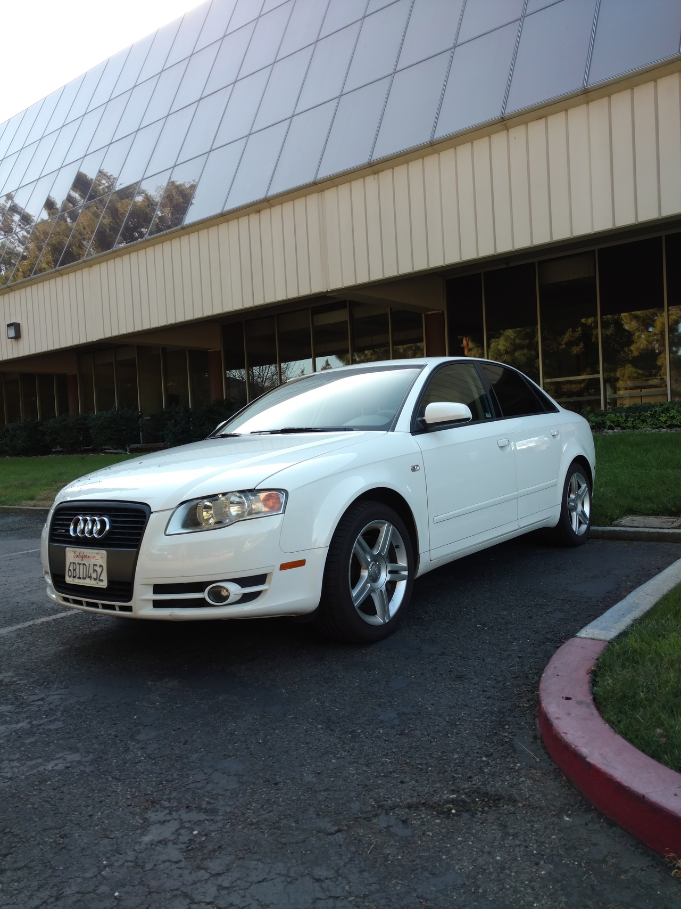

Comment chuis en retard !
Bon, qui dit deux semaines sans post dit aussi deux semaines de nouvelles et d’évènements à ratrapper…
Je vais essayer de le faire dans l’ordre histoire de pas trop en oublier… Alors pour commencer, j’ai fini par me débarrasser de mon loueur de voiture d’une façon très simpe: en achetant ma propre voiture… Comme on ne se refait pas (et que l’essence n’est vraiment pas chère…), j’ai repris une allemande d’occase. Oui, une avec quatre jolis anneaux dessus ! Elle n’est pas toute neuve (2007), mais je me la raconte quand même… La preuve:

Et encore, on voit pas sur la photo, mais il y a aussi un toit ouvrant. C’est la Californie ou c’est pas la Californie ?? D’autant qu’il fait carrément beau depuis deux trois semaines, donc je peux faire le malin à rouler toit ouvert :) Par contre, qui dit achat à un particulier par ici dit paiement en liquide. Oui, oui, pour une voiture aussi ! Ça choque tellement personne qu’on m’a regardé comme un martien quand j’ai demandé combien de temps avant il fallait prévenir la banque pour ce genre de retrait. Par contre, il va falloir qu’ils revoient la taille de leurs enveloppes à billets, il faudrait des modèles à soufflet, ça serait plus simple… Bref, me voila avec une énorme liasse de billets dans la poche à aller rendre ma voiture à l’aéroport pour retourner chercher la nouvelle en train. Sauf que pour aller chercher le train, il faut marcher, et c’est là que les choses se compliquent. Pas pour moi, plutôt pour l’infrastructure piétonne californienne… En fait, c’est simple, elle n’est pas complètement existante partout ! Genre sortir de l’aéroport en ayant l’impression d’arriver dans une zone de maintenance de l’aéroport, normal ! Tout ça pour atrapper un train de banlieue qui ne passe qu’une fois par heure pour finir encore une fois à pieds, dans une zone résidentielle cette fois où je devais être le seul adulte en age d’avoir le permis à marcher à pieds. Je me demande vraiment pourquoi on dit que c’est le pays de la bagnole, ici…
Sujet suivant, j’ai fini par réussir à déposer mon dossier de location de maison et (grâce aux sympathiques références de mon proprio et de mon boss) j’ai été retenu ! Donc depuis hier je m’offre le luxe d’avoir deux adresses dans la Silicon Valley… Bon, il y en a encore une qui est pleine de vide, donc je ne vais pas m’y installer tout de suite, mais la première étape est passée. À moi l’EDF-GDF californien et les visites chez Ikea !
Ah oui, et comme du coup je n’avais ni maison à visiter ni voiture louer / acheter ce week-end, je me suis autorisé une balade à San Francisco. Ça fait du bien, un peu d’animation :) Ça me change de ma banlieue… Bon, j’ai pas poussé jusqu’au pont rouge, mais ça sera pour la prochaine fois (et il faisait trop gris pour vous faire raler avec des photos) !
Enfin (et c’est tout frais du jour), je suis allé passer mon permis aujourd’hui. Avec ma voiture (oui, passer l’épreuve de conduite en Audi, ça le fait grave !), au moins j’étais sûr que j’avais le droit… Donc me voilà à 14:00 au bureau du DMV (ça ne fera jamais que le troisième bureau que je fais, après tout) avec mon attestation d’assurance, mon attestation du code. Pour un rendez-vous prévu à 14:15, j’étais nickel. En plus, il y avait même une file exprès pour l’épreuve de conduite, donc même pas besoin de passer par l’accueil, tout nickel ! J’arrive donc devant la dame (fort aimable au demeurant, ça change…) qui vérifie mes papiers, me dit que tout est bon… et me demande où est le conducteur qui m’accompagne ! Elle l’a répété trois fois tellement je pensais que c’est moi qui ne comprenais pas. Et en fait si, elle m’a bien expliqué qu’elle savait bien que j’avais le droit de conduire seul avec mon permis français, mais qu’il fallait qu’un conducteur titulaire du permis californien m’accompagne pour passer le permis… Et quand je dis qu’elle a été aimable, elle a même été sympa, vu qu’elle m’a dit que si je pouvais avoir un conducteur pour m’accompagner, elle voulais bien me passer sur le créneau de 14:30… Donc me voila à appeler un collègue pour qu’il vienne faire de la figuration… Donc finalement, il arrive (heureusement, ce n’est pas loin du boulot), il présente son permis et me voila autorisé à aller passer l’épreuve. Mais pas seul, vu qu’il me faut un conducteur… assis à la place du passager ! On reprend ma voiture et je me met dans la file des candidats au permis. Arrive mon tour, mon collègue descend de la voiture (son rôle s’est limité à présenter son permis et être assis à côté de moi pour faire le tour du batiment en voiture) et c’est parti pour l’épreuve. Qu l’examinatrice me décrit dans le detail avant de commencer. Je ne m’y ferais pas, à ce côté “il faut que tout soit expliqué”. Donc elle me demande de faire marcher tout ce qui peut marcher dans la voiture, clignotants, feux stops, phares, essuie glaces, klaxon,… J’ai même eu droit à comment vous montrez que vous voulez tourner à droite, à gauche ou ralentir avec le bras ? Euh, je sais pas, j’ai un clignotant et des feux stops ? Non, en vrai, j’ai répondu, j’avais même révisé… :) Bref, une fois tout ça vérifié, l’examinatrice s’assied à côté et roulez jeunesse ! J’avais oublié à quel point ça peut bêtement mettre la pression d’avoir quelqu’un qui étudie tout mes faits et gestes pendant que je conduit… Après, conduire une automatique à 30 km/h dans des rues désertes de 30 metres de large, ça va, c’est pas trop compliqué… En tout cas, il faut croire que j’ai fait bonne impression, vu que j’ai réussi l’épreuve ! Me voila un licensed californian driver !!! Il n’y a plus qu’à attendre le vrai permis, maintenant…
La suite au prochain épisode.
Stay tuned,
– P.